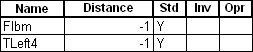
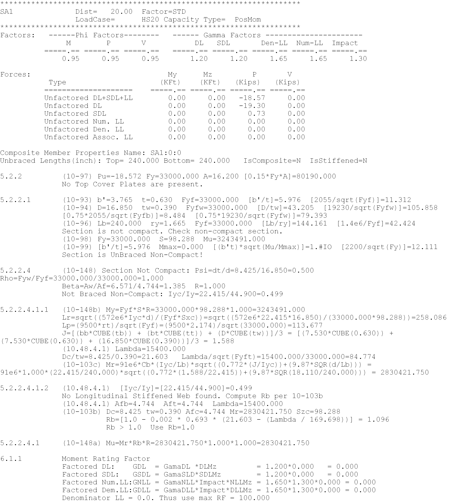

Step 5A - The Capacity and Rating TRACE feature
Every equation and critical calculation performed when computing a member’s capacity and rating can be written to a report file. This report file is annotated using the AASHTO equation and paragraph numbers, as well as the BRIDG Capacity and Rating flow chart numbers. The flow chart numbers used by BRIDG each represent an internal sub-system in the program. It is advised that you bring up the help system and display or print out the flow charts to best interpret the trace report.
If you were to ask the program to trace all members, for all load cases, for all factoring configurations, at all points of interest, you will easily fill up your hard disk. Because of this, you will need to tell BRIDG which members to trace and also supply some other filtering criteria. A feature that will soon be implemented will be to generate these traces on demand after the analysis is complete, for now, you need to set up the trace criteria prior to running the analysis.
Note
The demonstration file 101-314.BDF already has the trace set for two critical members.
The first step in setting up a trace is to turn on the trace switch. This is in the Analysis Controls table. Set the CapTrace parameter to Y. (See Input Analysis Controls)
Next, list the members and the locations to be traced. This example is from the 101-314 example. As documented, the use of a location value of -1.0 will result in all points of interest on the member being traced. The location value must be a valid point of interest location, as reported in the capacity report file, else no trace will result. Also, only the standard factoring case will be traced. (See also Capacity Trace)
The last thing to do before running the analysis is to restrict the load combinations to one or two. The example file has all but the HS20 load case for standard factoring turned off. (See Load Combination Definition)
Now run the analysis by pressing the toolbar button labeled FEA. When done the report file 101-314_CapTrace.RPT can be found in the same directory that the 101-314.BDF file is. You will need to view the file using an external file viewer such as Notepad. A planned feature that will be available soon is to a built in file viewer.
The following is an excerpt of the trace file generated by the default values in the example file.
